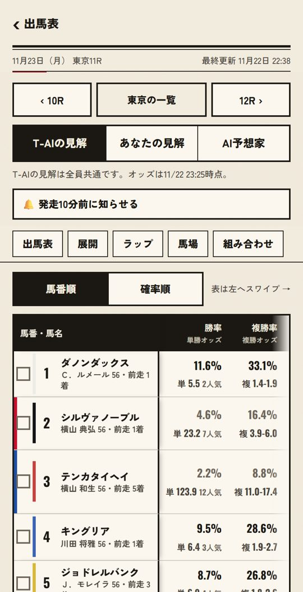
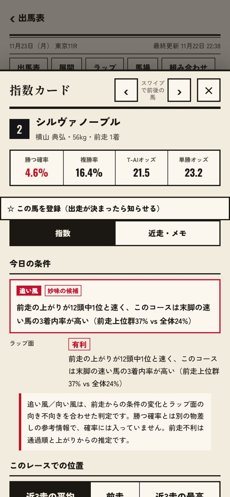
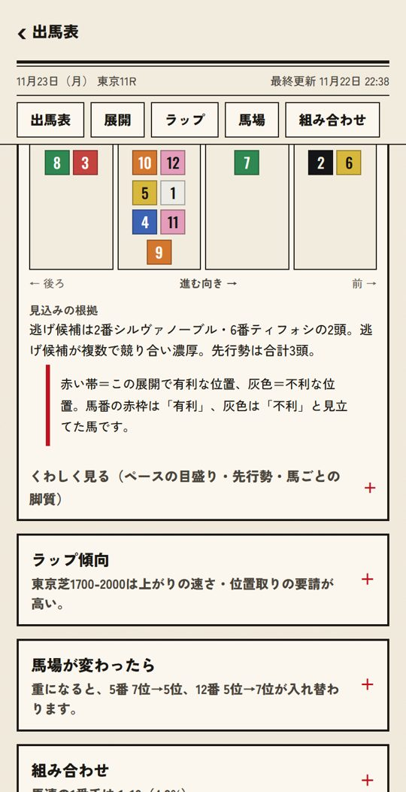
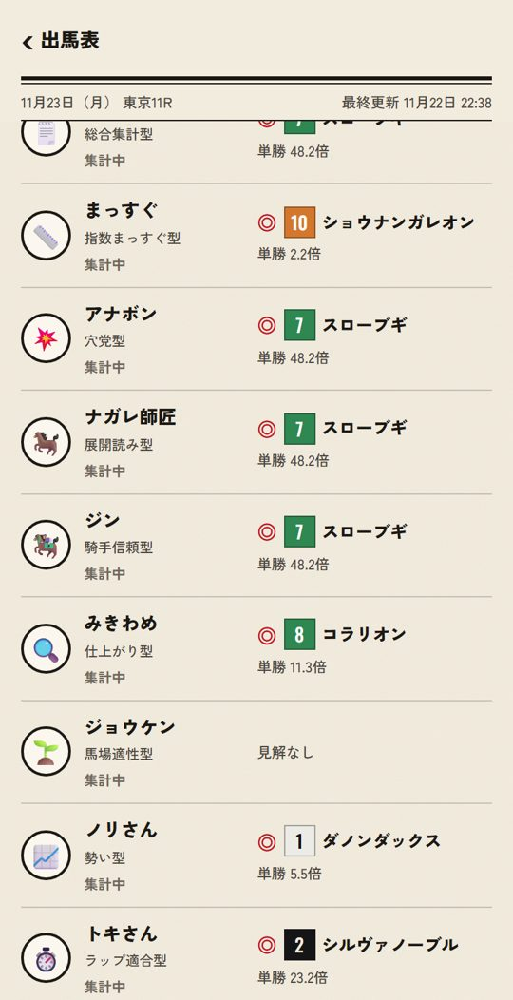
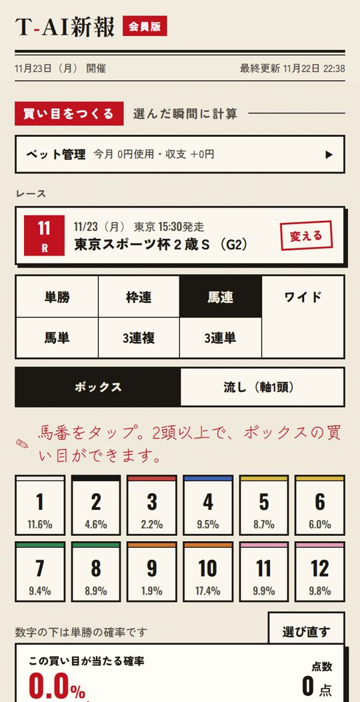

最強の
T-AIに、
第2の勝率
v2エンジン
始動！
NEWT-AI v2エンジン、
当てるな。
選ぶのもやめろ。感覚と
外れる
確率を正しく
だから
T-AIがやるのは、
全てお
「競馬は
私は
多くの
「競馬は
これは
なぜなら
その
「何もしない」なんて
去年、
その
それまで
でも
これは
「本当に
これはある
根拠のない
この
そのとき、
「これっていいのかな？
そして
もし
私の
それだけは、
「私がいなくなっても、
私の
AIの
いいものができたと
だから
ここまで
「同じものは
AIは
「稼げる
もともとある
その
T-AI。
これは、
T-AIは、
「正確な予測勝率が
勘は
使うのは、
「この
「この
と
それが
T-AIは、
「30%」と
「5%」と
T-AIが
全ての
「何となく」で
また、
T-AIの
盛った
予想をする
今の
今年の
これが【最後の
巨大な
【市場を
になるのか？
それとも
【壊される
になるのか？
おそらく、
注ぎ込んだ
そして
いくらいい
今回の
かなりの
前回の
11月21日〜23日の
「これから





← 左右に
ほかにも、
発走前の
前日に
v2は、
会員ページでは、
過去の
「みんなが
v2は
全面広告募集要項
オッズを
募集状況限定20名締切 11/24（火）
残り20名
締切まで 30:00
現会員様返金保証 対象外
＋29,800円税抜／税込 ＋32,780円
料金：＋29,800円（2027年末まで
現会員様は、
※過去に
※こちらは
【全プラン共通の
保 証 書
1.半年プラン・年間（2027年末）
継続する
2.年間（2027年末）
年間プランに
これだけ
前回は、
これが
市場を
一見すると
もしあなたが
根拠のない
今週から
過去一番の
川崎タカシ
参加を
A.まったく
A.感情ではなく
A.大金は
A.ご
A.全レースに
A.はっきり
市場を
壊される
募集状況限定20名締切 11/24（火）
残り20名
締切まで 30:00